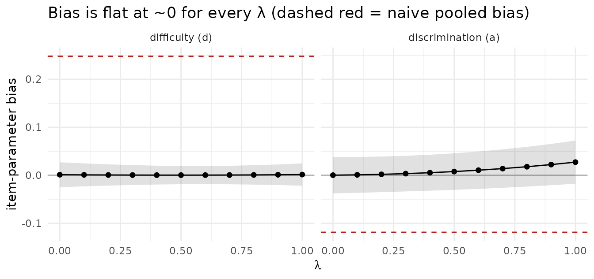
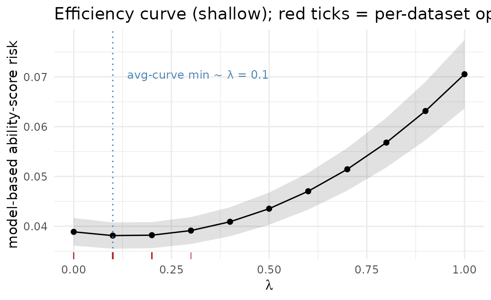

Calibrating with a Weakly-Informative, Biased LLM
Source:vignettes/weakly-informative-llm.Rmd
weakly-informative-llm.RmdThis vignette treats the regime prediction-powered inference is built
for: a smaller human sample (here n = 500) alongside a much
larger synthetic / LLM sample (N = 100000). The LLM here is
biased, in that its item parameters are systematically off, making them
only weakly informative about the human responses.
Importantly, the mixed-subjects (PPI) estimator is asymptotically
unbiased for the true human parameters at every
.
Tuning
is an efficiency knob, not a bias knob. A naive fit that pools the human
and LLM responses has no such protection: the n = 500
humans are outvoted by the N = 100000 rows of LLM-generated
responses, and the estimate inherits the LLM’s biased data generating
process.
All numbers are precomputed
(data-raw/precompute_largeN.R): n = 500, N = 100000, 16
Monte Carlo replications.
The setup
Human responses come from a true 8-item 2PL model
(a ∈ [0.8, 1.6], d ∈ [-1.1, 1.1]). The LLM is
a shifted version with discriminations attenuated by 10% and intercepts
shifted up by 0.25. This makes the response structure plausible but
biased:
true_pars <- data.frame(item = paste0("Item", 1:8),
a = seq(0.8, 1.6, length.out = 8),
d = seq(-1.1, 1.1, length.out = 8))
llm <- true_pars
llm$a <- 0.9 * true_pars$a # ~10% attenuated discriminations
llm$d <- true_pars$d + 0.25 # +0.25 intercept shift
theta <- rnorm(500)
observed <- simulate_2pl(theta, true_pars) # n = 500 human
predicted <- simulate_2pl(theta, llm) # paired LLM (same people)
generated <- simulate_2pl(rnorm(100000), llm) # N = 100000 unlabeled LLMNaive pooling inherits the bias
The obvious move is to pool everything and fit one model:
The 500 humans are in the fit, but against 100,000 LLM rows their information is washed out, and the estimate is dragged onto the LLM’s shifted parameters:
Averaged over the replications, the naive estimator’s item-parameter
bias is -0.119 in the slopes and
+0.248 in the intercepts — essentially the LLM’s shift
(−0.1·a, +0.25). Because N = 100000, that wrong answer is
estimated very precisely (a tiny standard error); more LLM data
only sharpens the bias.
moves efficiency, not bias
The mixed-subjects estimator minimizes the loss
At the true parameters the human loss is mean-zero and the paired
correction L_g − L_p is also mean-zero, so the estimating
equation is mean-zero for every
.
Unbiasedness comes from this structure, not from a specific value of
.
To see it directly, we fit the estimator across a grid of
values and track two things: the item-parameter bias (Monte Carlo mean
of estimate − truth) and the model-based ability-score risk
(the quantity the tuner actually minimizes).

The mixed-subjects bias sits on zero across the entire range of (the shaded band is Monte Carlo SE); the dashed red lines mark the naive pooled bias. Tuning changes efficiency:

For this weakly-informative LLM the averaged risk curve is shallow and rises for larger λ: leaning on a poorly-correlated predictor adds measurement error to latent ability. Its minimum sits near λ ≈ 0.1, onlyabout 2% below the λ = 0 (human-only) risk — almost no efficiency to begained. Because the curve is so flat, each individual dataset’s optimum scatters around this value (the red ticks); see the next section. Every pointon the curve is unbiased.
Choosing
The curve above was sampled on a grid only to draw the surface using
tune_lambda_ability_risk(..., method = "grid"). To choose
an operating
you do not need a grid at all. By default,
tune_lambda_ability_risk() selects
by direct optimization of the risk over [0, 1]
(stats::optimize()):
# Direct optimization is the default (method = "optimize").
tuned <- tune_lambda_ability_risk(
observed = observed, predicted = predicted, generated = generated,
target_resp = observed, initial_pars = human_start$pars,
fit_fn = fit_mixed_subjects_mml, n_quad = 11
)
tuned$best_lambda # continuous lambda
# Pass method = "grid" (and a lambda_grid) to scan instead -- how the curve
# above was drawn. lambda_grid otherwise just bounds the optimizer's search.The optimizer returns the minimizer of this dataset’s risk surface. Here, λ = 0.27. Every dataset has its own (noisy) risk surface, so its optimal λ varies. Across the 16 replications the per-dataset optimum averaged 0.14 and ranged [0.0, 0.3], scattering around the minimum of the averaged curve (≈ 0.1). (These are not the same point — the minimum of the average risk is not the average of the per-dataset minima.) The scatter is wide here because the surface is shallow; informative predictions sharpens it.
(The 2-fold cross-fitted tuner,
tune_lambda_ability_risk_crossfit(), lands at the same
place: at
the cross-fit
-inflation
vs
is negligible, so cross-fitting does not change the selected
.)
Takeaways
- The mixed-subjects estimator is unbiased for the true human parameters at every ; pooling lets a large biased LLM sample outvote the human anchor and inherits its bias.
-
tuning is performed directly and efficiently.
tune_lambda_ability_risk()selects by direct 1-D optimization by default; a grid (method = "grid") is just a convenient way to visualize the whole risk surface.
Reproducing
data-raw/precompute_largeN.R runs the Monte Carlo over
the λ grid and the direct optimization, and writes the cached results
(Rscript data-raw/precompute_largeN.R [n_reps] [cores] [N]).
At N = 100000 each fit takes several seconds, so it is run
once offline rather than during vignette knitting; pass a larger
N to confirm the picture is unchanged.